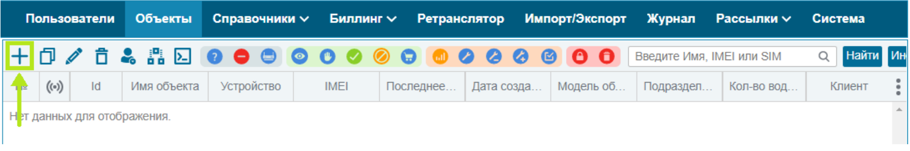

Быстрый старт: УМКа312
Пошаговая инструкция для нового сотрудника по установке и настройке терминала
Оглавление
Установка SIM-карты
Подключение питания
Подключение датчиков
Датчик зажигания
Проводные ДУТ (RS-485)
Беспроводные ДУТ (BLE)
Установка и запуск конфигуратора
Подключение терминала к ПК
Настройка сервера
Установка терминала на транспорт
Заведение объекта на сервере
1. Установка SIM-карты
Открутите винты корпуса терминала с помощью крестовой отвертки PH1.
Осторожно снимите крышку и извлеките плату.
Установите SIM-карту в соответствующий слот.
Соберите корпус обратно.
Внимание:
Убедитесь, что питание терминала отключено перед установкой SIM-карты!
2. Подключение питания
Подключите терминал к источнику питания 12В.
Используйте разъем:
1 (красный +)
и
7 (черный -)
пины для подачи питания.
Убедитесь, что все модули терминала запустились.
Информация:
Питание по USB или от встроенной батареи недостаточно для работы всех модулей.
3. Подключение датчиков
Датчик зажигания
Проводные ДУТ (RS-485)
Беспроводные ДУТ (BLE)
3.1 Подключение датчика зажигания
Синий провод (дискретный вход-выход) подключите к плюсовому проводу после замка зажигания.
3.2 Подключение проводных ДУТ (RS-485)
Подключите до 3 датчиков уровня топлива (ДУТ) с протоколом LLS по интерфейсу RS-485.
Используйте кабель типа «витая пара».
Резистор на конце шины — 120 Ом.
Минимизируйте длину ответвлений от шины к датчикам.
Назначьте каждому устройству уникальный адрес для предотвращения коллизий.
Информация:
Максимум 3 проводных ДУТ на одну шину RS-485.
3.3 Подключение беспроводных ДУТ (BLE)
В конфигураторе перейдите во вкладку
Система
→
Параметры Bluetooth
.
Выберите режим BLE:
ДУТы BLE
(BLEMODE 2) или
Конфигурирование и ДУТы BLE
(BLEMODE 3).
Запишите конфигурацию в терминал.
На вкладке
ДУТы BLE
введите MAC-адрес или используйте BLE-сканер для поиска устройств.
Поставьте галочку «Опрашивать» для начала получения данных.
Адресация беспроводных ДУТ начинается с 7.
Успех:
Можно подключить до 4 беспроводных ДУТ одновременно.
4. Установка и запуск конфигуратора
Скачайте установщик ПО «Конфигуратор 3XX» с официального сайта.
Запустите скачанный файл и разрешите внесение изменений.
Выберите язык и путь установки.
При первой установке выберите опцию
Установить драйвер терминала
.
Дождитесь завершения установки и запустите конфигуратор.
Информация:
Для работы требуется Windows 7 или выше.
5. Подключение терминала к ПК
Запустите приложение «Конфигуратор УМКа3ХХ» через меню «Пуск».
Подключите терминал к ПК с помощью USB A - mini-B кабеля или через BLE.
Для BLE: нажмите «Удаленное конфигурирование», введите IMEI и пароль, нажмите «Подключиться».
Внимание:
При первом запуске программа может предложить обновление — рекомендуется согласиться.
6. Настройка сервера
Перейдите во вкладку
Серверы
в конфигураторе.
Укажите IP-адрес или домен и порт сервера мониторинга.
Запишите конфигурацию на терминал с помощью соответствующей кнопки.
7. Установка терминала на транспортное средство
Установите терминал так, чтобы антенна ГЛОНАСС/GPS была направлена вверх.
Расположите терминал на открытом месте, вдали от металлических предметов.
Используйте пластиковые стяжки или специальные разъемы для крепления проводов.
Дайте терминалу несколько минут для связи с сервером обновлений.
Внимание:
Соблюдайте ориентацию устройства для корректной работы навигации!
8. Заведение объекта на сервере и привязка IMEI

Войдите в систему мониторинга ГЛОНАССSoft.
Перейдите в раздел
Объекты
и нажмите на иконку добавления нового объекта.
Заполните карточку объекта:
Имя объекта (гос.номер)
IMEI терминала
Тип устройства
Модель объекта
Подразделение (по необходимости)
Телефоны SIM1 и SIM2 (по необходимости)
Успех:
После выполнения всех шагов терминал будет готов к работе!